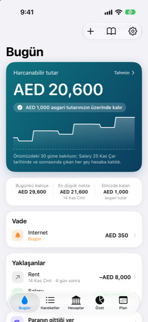

Kılavuz › Buradan başlayın
Damla ile bir gün
Bugün ekranında nelere bakacağınız ve cevabı doğru tutan küçük alışkanlıklar.
Bugün, Damla'nın size her gün gösterdiği ekrandır: üstte tek büyük cevap - harcanabilir tutar - ve altında sizden bir şey isteyen her şey. Bu sayfa günlük alışkanlıktır.

Ne zaman kullanılır
- Sabah, hesabınızdan hiçbir şey çıkmadan önce bugünün nasıl görüneceğini görmek için.
- Vadesi gelen bir şey olduğunda, Vade listesinden tek dokunuşla kaydetmek için.
- Bir banka mesajı beklenmedik bir yere gittiğinde, onu onayınızı beklerken bulmak için.
- Paranın bu ay nereye gittiğini öğrenmek istediğinizde.
Adım adım
- Bugün'ü açın. Büyük kart Harcanabilir tutar bilgisini ve bir hükmü gösterir: ya dönem boyunca bakiyenin asgarinizin üstünde kalacağını söyler, ya da bir tarihten önce eksik kalabilirsiniz der. Tahmin'i açmak ve düşük noktanın gün gün nerede olduğunu görmek için karta dokunun.
- Kartın altındaki üç sayıya bakın: Bugünkü bakiye, dönemdeki En düşük nokta ve tarihiyle birlikte, ve Elinizde kalan, yani asgariniz.
- Sayıların altında, cevap bekleyen her şey birer satır olarak, bu sırayla görünür:
- Vade (yarın, bugün ya da çoktan vadesi geçmiş, henüz kaydedilmemiş gelir ve faturalar). - İncelenmeyi bekleyen ekstreler (Kısayol'un gönderdiği; siz onaylayana dek hiçbir şey eklenmez). - Onayınızı bekleyen ögeler (Gelen kutusu). - Geçmişinizde bulunan faturalar (Damla'nın fark ettiği tekrarlayan ödemeler; tek dokunuşla eklersiniz). - Yaklaşan faturalar (bir mesajla duyurulan ama henüz çekilmemiş; kart çekildiğinde sayılır). - Kurulumu tamamlayın (sonraya bıraktığınız adımlar). - Bir yedekleme hatırlatması, otomatik yedekleme birkaç gündür çalışmadıysa, ya da defterinizde zaten kayıt varken kapatılmışsa.
- Sizinle ilgilenen satıra dokunun. Vadesi gelen bir ödeme kaydetmek için kendi sayfasını açar; bir kart faturası Kart faturasını öde (tutar, hesap, tarih) ekranını açar; beklemedeki bir harcama kendi planını açar. Kaydedecek kadar net olan bildirimler doğrudan İşlem listesine, Bildirimlerden yeni altına girer.
- Altındaki Yaklaşanlar bölümünü gözden geçirin: gelen ve giden para birlikte, her biri tarihli, ve kaydedildiği yere doğrudan giden dokunulabilir satırlarla. Banka hesaplarınızdan birinde bir En az tutulacak tutarı varsa ve ay bitmeden onun altına düşecekse, ne kadar taşınacağını gösteren bir …'dan …'ya taşı satırı görünür - hesabı görmek için dokunun.
- Bu ay ne kadar harcadığınızı öğrenmek için Paranın gittiği yer satırını okuyun, ve yapmayı düşündüğünüz bir şey hakkında sorunuz varsa Damla'ya sor'a başvurun.
Eksik kalabilirsiniz görürseniz, bu, dönemdeki en düşük bakiye noktanızın dönem bitmeden asgarinizin altına düşmesi demektir. Tahmin, ne zaman olduğunu gösterir. Ya ne olursa (Tahmin içindeki bir düğme), gerçekten yapmadan önce harcama yapmayı, para almayı, bir ödemeyi atlamayı ya da bir şeyi taksitlendirmeyi denemenizi sağlar.
Bilmekte fayda var
Cevabı doğru tutan küçük alışkanlıklar:
- İşler olduğunda onları kaydedin - Ekle menüsünde Bir cümle yazın, ya da banka mesajlarınızın bir Kısayol aracılığıyla Damla'ya ulaşmasını sağlayın ki bu kendiliğinden olsun.
- Gelen kutusunu açın ve onayınızı bekleyenleri açıkta bırakmak yerine temizleyin.
- Henüz fatura olmayan bir şey tekrar ediyorsa, onu geçmişinizde bulunan faturalar satırından ekleyin ki tahmin onu sayabilsin.
- Yedekleme hatırlatmasını temiz tutun: her şey telefonda yaşar, yani yedek sizin kopyanızdır.
- Cevap eksik kalabilir derse erken bakın: Tahmin'i açın.
İlgili
Anlaşılmayan ya da eksik bir şey mi var? support@raveniq.ai adresine yazın ve hangi sayfa olduğunu belirtin.